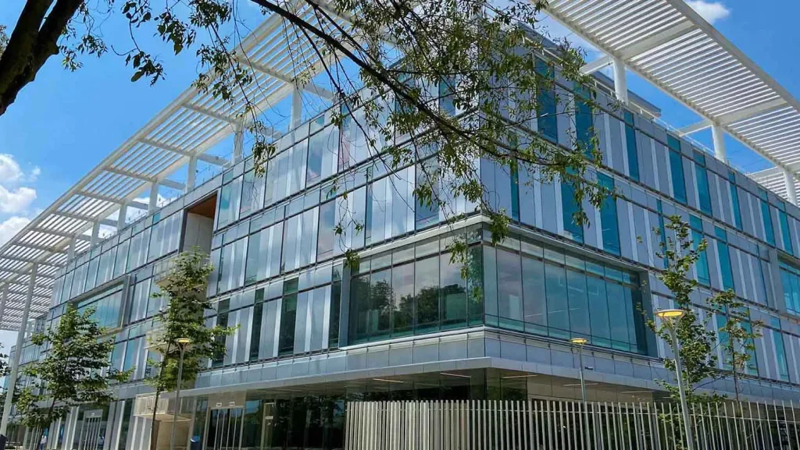

Economía · Región CDMX
Vida del claustro
Novedades, conversaciones y recursos para el profesorado de Economía.
Periodo 202613 · Agosto–diciembre de 2026
Guía de inicio de semestre
Consulta el calendario y las recomendaciones para preparar tus clases y acompañar al estudiantado.
Discusión de la semana
La discusión destacada aparecerá aquí.
Novedades del claustro
Eventos, reconocimientos y publicaciones de la comunidad.